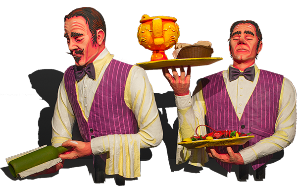
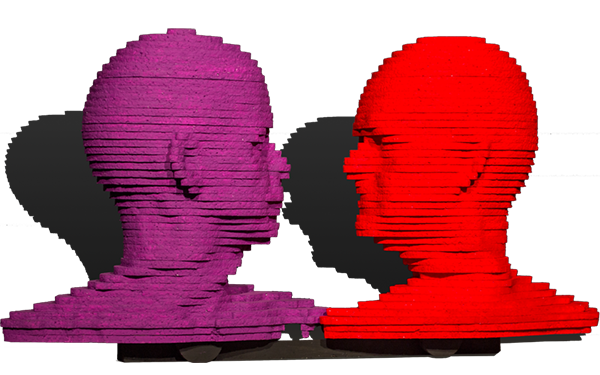
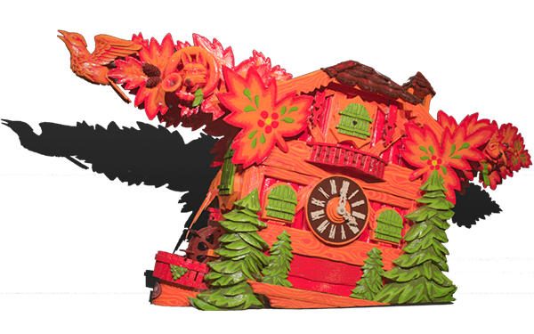
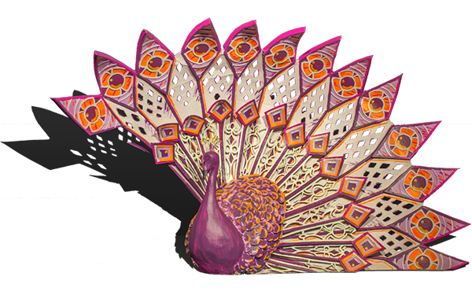

Het corso van Zundert is het grootste corso van de wereld. Het is louter vrijwilligerswerk. Twintig buurtschappen strijden met elkaar om de mooiste wagen te bouwen, ter beoordeling van een vakkundige jury. En dat al meer dan tachtig jaar.


Twintig vlaggen
Zundert is verdeeld in twintig buurtschappen die een wagen bouwen voor het corso. Elke buurt heeft zijn eigen cultuur, zijn eigen identiteit en zijn eigen heraldiekvlag. Je buurt bepaalt voor een stukje wie je bent.
Corso is voor iedereen
Het corsovirus gaat over van generatie op generatie. Het is allemaal liefdewerk-oud papier, maar toch werkt de hele buurt mee.




Maquettes
Voor de bouw kan beginnen wordt er een maquette van de wagen gemaakt. In juni worden alle maquettes aan het publiek gepresenteerd.

Schaal één op tien
Net als de bouwers zijn de ontwerpers gewoon vrijwilligers. Zij spelen een leidende rol; ze verzinnen het idee en maken een maquette op schaal die als leidraad dient tijdens de bouw van de wagen.
Zomervakantie in een tent
Corsobouwers brengen de zomermaanden door in de corsotent. Het gaat van grof laswerk tot fijn tempexgepriegel en papier-maché.
Alleen dahlia's
Elke buurt heeft zijn eigen dahliaveld. Op de velden staan de dahlia's in tientallen soorten en kleuren. Het zijn vooral de ouderen van de buurtschap die de knollen planten, het onkruid wieden en de bloemen plukken.
Dag- en nachtwerk
Het 'tikken' van de half miljoen dahlia's per wagen begint pas een paar dagen voor het corso. De tent is een mierennest, iedereen helpt mee tot de wagen klaar is. Al duurt het de hele nacht.
Het begin
Het corso is ontstaan in 1936. Winnares bij de versierde fietsen was Miep de Bie, van wie later een beeld is gemaakt door de Zundertse kunstenaar en corso-ontwerper Henk Groenhuis: het corsomeisje.


'40 - Jaren veertig
In 1947 verbaasde buurtschap Poteind vriend en vijand doordat hun wagen 'Bloemenkoningin' vanzelf reed, zonder dat er een paard voor stond. Onder de wagen zaten duwers. Dat is tot op de dag van vandaag de manier waarop corsowagens worden voortbewogen.
'50 - Jaren vijftig
Het corso nam in de jaren vijftig een grote vlucht. Corso's waren populair in die tijd, en het Zundertse corso genoot grote vermaardheid in binnen- en buitenland. In de topjaren kwamen honderdduizenden bezoekers naar Zundert, en werd het corso uitgezonden op de landelijke tv.

'60 - Jaren zestig
De connecties die het corso legde met de kunstacademie Sint Joost in Breda, lieten in de jaren zestig hun sporen na in het corso. Diverse studenten van de academie maakten hun entree als ontwerper van meer kunstzinnige wagens, net als juryleden met diezelfde achtergrond.
'70 - Jaren zeventig
Het corso groeit uit tot een vast onderdeel van het reilen en zeilen in het dorp Zundert. De meeste corso-ontwerpers zijn man, maar degene met de meeste eerste prijzen ooit is een vrouw: Ellie Snepvangers. In de jaren zeventig won ze met haar buurtschap Klein-Zundert driemaal op rij de eerste prijs.
'80 - Jaren tachtig
Onder het striemende bewind van buurtschap Wernhout en ontwerper Robert Ruyzenaars namen de corsowagens sterk in grootte toe. Aan het einde van de jaren tachtig stelde het bestuur paal en perk aan de afmetingen van de wagens, want het dreigde de spuigaten uit te lopen.
'90 - Jaren negentig
De controversiële wagen Torso Contrapposto gooide in 1992 het roer om naar een type wagens met meer nadruk op grote en monumentale vormgeving. Halverwege de jaren negentig deden theaterwagens hun entree, met niet alleen vormgeving maar ook figuratie, beweging en muziek.

'00 - Jaren nul
Wat niemand voor mogelijk had gehouden, gebeurde in de jaren nul: maar liefst drie nieuwe buurtschappen maakten hun entree in het corso: De Lent, Rijsbergen en Schijf.
'10 - Jaren tien
Internet en social media zorgen ervoor dat het corso internationale bekendheid verwerft. In de stoet is beweging de nieuwe trend.
Tachtig jaar corso
Het eerste corso trok in 1936 ter ere van de verjaardag van koningin Wilhelmina. Vanaf het prille begin hebben de Zundertenaren hun corso gekoesterd en van generatie op generatie doorgegeven. Vooral in de jaren vijftig kende het corso een grote belangstelling van het publiek.
Feest!
Vreugde vieren en verdriet verdrinken.
Nieuwsgierig?
Wilt u Corso Zundert zelf meemaken? Bestel dan uw tickets direct online of ga naar onze website en ontdek wat Corso Zundert allemaal te bieden heeft.
Bestel tickets Corso Zundert